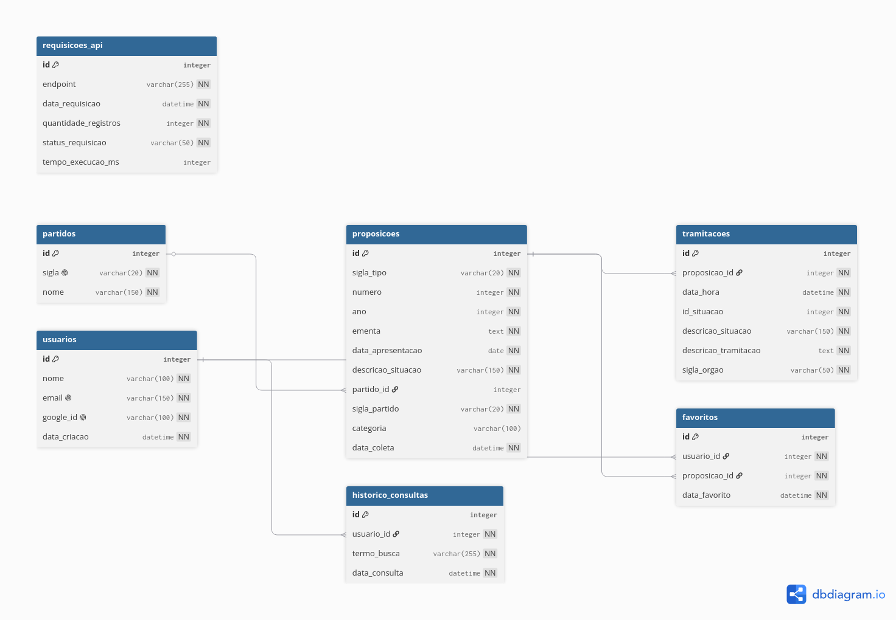

Esquema do Banco de Dados — LegisKids¶
Visão geral¶
O banco de dados do LegisKids é um PostgreSQL relacional composto por 10 tabelas que suportam o ciclo completo da plataforma: coleta e sincronização automática de proposições legislativas, classificação temática via IA, acompanhamento de tramitações, autenticação de usuários, favoritos, histórico de buscas, auditoria de chamadas à API e rastreamento de execuções do job de sincronização.
A fonte de verdade do schema são os modelos SQLAlchemy em src/backend/models.py. As migrations em migrations/versions/ garantem que o banco físico reflita esses modelos — sempre rode python -m flask --app src/backend/app.py db upgrade ao puxar mudanças.
Diagrama Entidade-Relacionamento¶

O código-fonte do diagrama está em
docs/db/erd.dbmle pode ser editado no dbdiagram.io.
Tabelas¶
partidos¶
Armazena os partidos políticos usados para classificar as proposições. Os IDs são os identificadores oficiais da API da Câmara dos Deputados e são pré-populados pelo script scripts/seed.py.
| Coluna | Tipo | Obrigatória | Descrição |
|---|---|---|---|
id |
integer | Sim | ID oficial do partido na API da Câmara dos Deputados (PK) |
sigla |
varchar(20) | Sim | Sigla do partido (ex: PT, PL, MDB) — única no banco |
nome |
varchar(150) | Sim | Nome completo do partido |
Constraints: id PK · sigla UNIQUE
proposicoes¶
Tabela central do sistema. Armazena as proposições legislativas coletadas da API da Câmara dos Deputados. Cada proposição é identificada de forma única pela combinação de tipo, número e ano.
| Coluna | Tipo | Obrigatória | Descrição |
|---|---|---|---|
id |
integer | Sim | ID oficial da proposição na API da Câmara (PK) |
sigla_tipo |
varchar(20) | Sim | Tipo da proposição (ex: PL, PEC, MPV, PDC) |
numero |
integer | Sim | Número da proposição no ano |
ano |
integer | Sim | Ano de apresentação da proposição |
ementa |
text | Sim | Texto da ementa conforme registro oficial |
data_apresentacao |
date | Sim | Data em que a proposição foi apresentada à Câmara |
descricao_situacao |
varchar(150) | Sim | Situação atual da proposição (ex: "Aguardando Pauta") |
partido_id |
integer | Não | FK para partidos.id — nulo se partido não identificado na coleta |
sigla_partido |
varchar(20) | Sim | Cópia desnormalizada da sigla do partido para leitura rápida |
data_coleta |
datetime | Sim | Timestamp automático do momento em que a proposição foi coletada |
classificacao_status |
varchar(30) | Sim | Estado da categorização por IA: pendente_classificacao (padrão) ou classificado |
Constraints: id PK · (sigla_tipo, numero, ano) UNIQUE · partido_id FK → partidos.id ON DELETE SET NULL
categorias¶
Armazena as categorias temáticas fixas usadas para classificar proposições via IA. As 8 categorias são inseridas automaticamente no startup da aplicação (seed_categorias()) usando INSERT ... ON CONFLICT (nome) DO NOTHING — são imutáveis e não devem ser editadas manualmente.
| Coluna | Tipo | Obrigatória | Descrição |
|---|---|---|---|
id |
integer | Sim | Identificador da categoria (PK, autoincremento) |
nome |
varchar(100) | Sim | Nome canônico da categoria — único no banco |
descricao |
text | Não | Descrição da categoria para uso no frontend |
cor |
varchar(7) | Não | Cor hex para visualização (ex: #EF4444) |
icone |
varchar(50) | Não | Identificador de ícone (ex: shield-alert) |
ativa |
boolean | Sim | Indica se a categoria está ativa (padrão: true) |
Seed data (8 categorias fixas):
| Nome | Cor | Ícone |
|---|---|---|
| cyberbullying | #EF4444 |
shield-alert |
| exploração sexual infantil online | #DC2626 |
alert-triangle |
| proteção de dados de menores | #3B82F6 |
lock |
| segurança digital infantil | #8B5CF6 |
shield |
| regulação de plataformas digitais | #F59E0B |
globe |
| conteúdos nocivos para menores | #EC4899 |
eye-off |
| crimes virtuais contra crianças | #6366F1 |
gavel |
| privacidade de menores | #10B981 |
user-shield |
Constraints: id PK · nome UNIQUE
proposicao_categoria¶
Tabela junction (many-to-many) entre proposicoes e categorias. Uma proposição pode pertencer a múltiplas categorias; uma categoria pode ter muitas proposições. Inserções feitas via vincular_categoria() em camara_repository.py com ON CONFLICT DO NOTHING para idempotência.
| Coluna | Tipo | Obrigatória | Descrição |
|---|---|---|---|
proposicao_id |
integer | Sim | FK para proposicoes.id |
categoria_id |
integer | Sim | FK para categorias.id |
Constraints: (proposicao_id, categoria_id) PK composta · proposicao_id FK → proposicoes.id ON DELETE CASCADE · categoria_id FK → categorias.id ON DELETE CASCADE
tramitacoes¶
Registra o histórico de tramitação de cada proposição. Cada linha representa uma etapa do processo legislativo de uma proposição específica, na ordem em que ocorreu.
| Coluna | Tipo | Obrigatória | Descrição |
|---|---|---|---|
id |
integer | Sim | Identificador único da tramitação (PK) |
proposicao_id |
integer | Sim | FK para proposicoes.id — identifica a proposição à qual pertence |
data_hora |
datetime | Sim | Data e hora do evento de tramitação |
id_situacao |
integer | Sim | Código numérico da situação conforme API da Câmara |
descricao_situacao |
varchar(150) | Sim | Descrição textual da situação (ex: "Aprovado") |
descricao_tramitacao |
text | Sim | Texto completo da movimentação registrada |
sigla_orgao |
varchar(50) | Sim | Sigla do órgão responsável (ex: PLEN, CCJ, CFT) |
Constraints: id PK · proposicao_id FK → proposicoes.id ON DELETE CASCADE
usuarios¶
Armazena os usuários autenticados via Google OAuth 2.0. Não há senha armazenada — a autenticação é delegada integralmente ao Google.
| Coluna | Tipo | Obrigatória | Descrição |
|---|---|---|---|
id |
integer | Sim | Identificador interno do usuário (PK) |
nome |
varchar(100) | Sim | Nome completo conforme conta Google |
email |
varchar(150) | Sim | Endereço de e-mail do usuário — único no banco |
google_id |
varchar(100) | Sim | ID único do usuário na plataforma Google — único no banco |
data_criacao |
datetime | Sim | Timestamp automático do primeiro login |
Constraints: id PK · email UNIQUE · google_id UNIQUE
favoritos¶
Tabela associativa que relaciona usuários às proposições que eles salvaram como favoritas. A constraint única composta impede que um usuário favorite a mesma proposição mais de uma vez.
| Coluna | Tipo | Obrigatória | Descrição |
|---|---|---|---|
id |
integer | Sim | Identificador do registro de favorito (PK) |
usuario_id |
integer | Sim | FK para usuarios.id — usuário que favoritou |
proposicao_id |
integer | Sim | FK para proposicoes.id — proposição favoritada |
data_favorito |
datetime | Sim | Timestamp automático do momento em que foi salvo |
Constraints: id PK · (usuario_id, proposicao_id) UNIQUE · usuario_id FK → usuarios.id ON DELETE CASCADE · proposicao_id FK → proposicoes.id ON DELETE CASCADE
historico_consultas¶
Registra o histórico de buscas realizadas por usuários autenticados. Permite exibir as últimas buscas do usuário e futuramente analisar padrões de uso.
| Coluna | Tipo | Obrigatória | Descrição |
|---|---|---|---|
id |
integer | Sim | Identificador do registro de histórico (PK) |
usuario_id |
integer | Sim | FK para usuarios.id — usuário que realizou a busca |
termo_busca |
varchar(255) | Sim | Texto exato digitado na busca |
data_consulta |
datetime | Sim | Timestamp automático do momento da busca |
Constraints: id PK · usuario_id FK → usuarios.id ON DELETE CASCADE
requisicoes_api¶
Log de auditoria das chamadas realizadas à API da Câmara dos Deputados. Permite rastrear o volume de coletas, identificar falhas recorrentes e monitorar o tempo de resposta ao longo do tempo.
| Coluna | Tipo | Obrigatória | Descrição |
|---|---|---|---|
id |
integer | Sim | Identificador do registro de requisição (PK) |
endpoint |
varchar(255) | Sim | URL ou identificador do endpoint consultado na API da Câmara |
data_requisicao |
datetime | Sim | Timestamp automático da requisição |
quantidade_registros |
integer | Sim | Número de registros retornados pela chamada |
status_requisicao |
varchar(50) | Sim | Status do resultado (ex: sucesso, erro_504, timeout) |
tempo_execucao_ms |
integer | Não | Duração da chamada em milissegundos — campo de monitoramento opcional |
Constraints: id PK
sync_executions¶
Registra metadados de cada execução do job de sincronização automática com a API da Câmara dos Deputados. Permite auditar quando o job rodou, quantas proposições foram processadas e se houve erros. Não tem FK para outras tabelas — é um log independente.
| Coluna | Tipo | Obrigatória | Descrição |
|---|---|---|---|
id |
integer | Sim | Identificador único da execução (PK) |
iniciado_em |
timestamptz | Sim | Timestamp UTC do início da execução |
finalizado_em |
timestamptz | Não | Timestamp UTC do fim da execução — nulo enquanto em andamento |
status |
varchar(30) | Sim | Estado da execução (veja valores abaixo) |
total_processados |
integer | Sim | Total de proposições processadas (filtradas por palavra-chave) |
total_inseridos |
integer | Sim | Total de proposições novas inseridas no banco |
total_atualizados |
integer | Sim | Total de proposições existentes com campos atualizados |
total_erros |
integer | Sim | Total de proposições que falharam na validação ou categorização |
mensagem_erro |
text | Não | Descrição do erro em caso de falha — nulo em execuções bem-sucedidas |
Valores de status:
| Valor | Significado |
|---|---|
em_andamento |
Job iniciado, ainda em execução |
concluido |
Todas as proposições processadas e categorizadas com sucesso |
concluido_parcial |
Processamento concluído, mas parte das proposições ficou com pendente_classificacao por falha do Gemini |
erro_api |
Falha ao consumir a API da Câmara após retries esgotados |
erro_interno |
Exceção inesperada dentro do pipeline |
Constraints: id PK
Relacionamentos¶
partidos ──────────────────── proposicoes (1 para N)
proposicoes ──────────────── tramitacoes (1 para N)
proposicoes ──────────────── favoritos (1 para N)
proposicoes ──────────────── proposicao_categoria (1 para N)
categorias ──────────────── proposicao_categoria (1 para N)
usuarios ─────────────────── favoritos (1 para N)
usuarios ─────────────────── historico_consultas (1 para N)
sync_executions ─────────── (sem FK — log independente)
partidos → proposicoes (1:N)
Um partido pode estar associado a muitas proposições. Uma proposição pertence a no máximo um partido. A FK partido_id é nullable — caso o partido não seja identificado na coleta, o campo fica nulo e sigla_partido preserva a sigla textual.
proposicoes → tramitacoes (1:N)
Uma proposição pode ter muitas tramitações ao longo de seu ciclo legislativo. Cada tramitação pertence a exatamente uma proposição. O ON DELETE CASCADE garante que ao apagar uma proposição todas as suas tramitações são removidas automaticamente.
proposicoes → favoritos (1:N) / usuarios → favoritos (1:N)
A tabela favoritos representa o relacionamento entre usuários e proposições. Um usuário pode favoritar muitas proposições; uma proposição pode ser favoritada por muitos usuários. A constraint UNIQUE (usuario_id, proposicao_id) impede duplicatas por par usuário-proposição.
usuarios → historico_consultas (1:N)
Um usuário pode ter muitos registros de busca. O ON DELETE CASCADE garante conformidade com requisitos de exclusão de dados (LGPD) — ao remover um usuário, todo o histórico é apagado.
proposicoes ↔ categorias (N:N via proposicao_categoria)
Uma proposição pode ser classificada em múltiplas categorias temáticas; uma categoria pode agregar muitas proposições. A junção é gerenciada exclusivamente pelo pipeline de IA (vincular_categoria()). O ON DELETE CASCADE em ambas as FKs da junction garante que vínculos órfãos nunca existam.
Índices e constraints importantes¶
| Tabela | Constraint | Tipo | Comportamento |
|---|---|---|---|
partidos |
id |
PK | — |
partidos |
sigla |
UNIQUE | Impede dois partidos com a mesma sigla |
proposicoes |
id |
PK | — |
proposicoes |
(sigla_tipo, numero, ano) |
UNIQUE | Impede duplicatas da mesma proposição em coletas repetidas |
proposicoes |
partido_id → partidos.id |
FK | ON DELETE SET NULL — proposição permanece sem partido |
tramitacoes |
id |
PK | — |
tramitacoes |
proposicao_id → proposicoes.id |
FK | ON DELETE CASCADE — tramitações removidas junto com a proposição |
usuarios |
id |
PK | — |
usuarios |
email |
UNIQUE | Um e-mail por conta |
usuarios |
google_id |
UNIQUE | Um Google ID por conta |
favoritos |
id |
PK | — |
favoritos |
(usuario_id, proposicao_id) |
UNIQUE | Impede favorito duplicado |
favoritos |
usuario_id → usuarios.id |
FK | ON DELETE CASCADE |
favoritos |
proposicao_id → proposicoes.id |
FK | ON DELETE CASCADE |
historico_consultas |
id |
PK | — |
historico_consultas |
usuario_id → usuarios.id |
FK | ON DELETE CASCADE |
requisicoes_api |
id |
PK | — |
categorias |
id |
PK | — |
categorias |
nome |
UNIQUE | Impede categorias duplicadas; base do seed idempotente |
proposicao_categoria |
(proposicao_id, categoria_id) |
PK composta | Impede vínculo duplicado |
proposicao_categoria |
proposicao_id → proposicoes.id |
FK | ON DELETE CASCADE |
proposicao_categoria |
categoria_id → categorias.id |
FK | ON DELETE CASCADE |
sync_executions |
id |
PK | — |
Decisões de design¶
partido_id nullable em proposicoes
A API da Câmara nem sempre retorna o partido do autor de uma proposição de forma estruturada. Para não bloquear a coleta, o campo partido_id é opcional. O campo sigla_partido (não-nullable) preserva sempre a sigla textual retornada pela API, mesmo quando a FK não pode ser resolvida. Isso é intencional: sigla_partido é uma cópia desnormalizada para leitura rápida e proteção contra perda de informação.
Categorias como tabela separada, não coluna em proposicoes
A classificação temática é modelada com uma tabela categorias dedicada e uma junction proposicao_categoria, não como coluna em proposicoes. Isso permite múltiplas categorias por proposição (ex: uma proposta pode ser "cyberbullying" e "regulação de plataformas digitais" ao mesmo tempo) e facilita consultas analíticas agregadas por tema. O campo classificacao_status em proposicoes rastreia se a IA já processou a proposição, independentemente de quantas categorias foram vinculadas.
Unique composta em favoritos
A tabela favoritos usa UNIQUE (usuario_id, proposicao_id) em vez de confiar na lógica da aplicação para evitar duplicatas. Isso garante integridade no banco independentemente de qualquer bug de camada de serviço.
ON DELETE CASCADE em tramitacoes, favoritos e historico_consultas
Entidades dependentes são tratadas como filhas sem sentido de existência independente. Se uma proposição é apagada, suas tramitações e favoritos associados perdem o contexto; se um usuário é removido, favoritos e histórico seguem a LGPD e são apagados. O CASCADE delega ao banco essa responsabilidade, evitando dados órfãos.
ON DELETE SET NULL em proposicoes.partido_id
Se um partido for apagado do banco (cenário raro), as proposições associadas não devem ser apagadas — apenas partido_id vai a nulo e sigla_partido preserva o registro histórico.
requisicoes_api como log de auditoria
Esta tabela não está relacionada a nenhuma outra — é um log independente. O objetivo é rastrear o comportamento do coletor ao longo do tempo: frequência de chamadas, endpoints mais usados, taxas de erro e tempo de resposta. Não tem FK porque um registro de requisição deve persistir mesmo que os dados coletados sejam apagados.
tempo_execucao_ms nullable em requisicoes_api
Monitoramento de tempo de execução é instrumentação opcional. Em cenários onde a medição não é possível ou relevante (ex: requisições assíncronas sem callback), o campo pode ser omitido sem invalidar o registro de auditoria.
classificacao_status em proposicoes
Proposições recém-coletadas entram no banco com classificacao_status = 'pendente_classificacao'. Após categorização bem-sucedida pelo Gemini, o status é atualizado para 'classificado'. Falhas de IA não bloqueiam a ingestão — a proposição fica disponível com status pendente e pode ser reclassificada por um job futuro. A separação explícita de status (em vez de campo nullable) permite consultar facilmente o backlog de classificação.
Como manter este documento atualizado¶
Sempre que uma nova migration for criada (flask db migrate):
- Editar
docs/db/erd.dbmlrefletindo as mudanças nos modelos - Reimportar o
.dbmlno dbdiagram.io e exportar um novoerd.png - Atualizar as tabelas e seções relevantes neste
schema.md - Commitar os três arquivos juntos com a migration